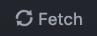
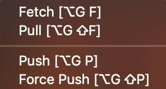

GitHub for Atom¶
Perhaps the best part of Atom is GitHub integration, which comes installed with Atom. This means there’s no extra steps to install Git or GitHub packages! The beauty of GitHub integration is that all of your GitHub actions can be done through a GUI in the Atom IDE, which circumvents the need to install GitHub desktop or learn the tedious Command Shell or Terminal Git commands. To learn more about how to use the GitHub integration, check out GitHub Basics within aguaclara_tutorial. This page also has useful information about the different GitHub terminology and how to use GitHub in Atom.
How to use GitHub in Atom¶
The wonderful part about Atom is that GitHub is integrated directly into it. The GitHub GUI in Atom makes all of the Git commands easy to use.
Cloning a Repository in Atom¶
Once you’ve created a repository, you’ll want to show your subteam members how to create a copy of it on their computers so that they’ll be able to push and pull.
This is done by cloning the repository. Let’s all clone the aguaclara_tutorial repository so that you get the hang of it. First go to the repository and click on the green Clone or Download button. Copy the URL shown. Then open Atom and press Cmnd + Shift + P on mac, or Cntrl + Shift + P and search for GitHub: Clone. Paste the URL into the Clone From box and put the path to your GitHub folder, e.g. for me it’s Users/Fletch/Documents/GitHub/aguaclara_tutorial, in the To directory box.
Here is a video demonstrating this.
Adding a project folder¶
Before you can start working on a project, you’ll have to add the project folder to Atom. Project folders are the same things as repositories, so every time you add a project folder, you’re adding the entire repository to Atom. To add a project forlder, use Cmnd + Shift + O or Cntrl + Shift + O, and navigate to the repository you wish to work out of. Your project will then appear in a side bar within the Atom interface. Clicking on it enables you to open any file within the repository.
Navigating branches¶
On the bottom right hand corner of Atom, there’s a toolbar with many different icons. One of them shows what branch your file is in within a given repository. It should look something like this:

Clicking on that icon will being up a window that allows you to switch branches and create a new branch.

Pushing and pulling¶
On the same toolbar as the branch icon, there’s an icon that enables you to push, pull, or fetch. It looks like this:
Right clicking on it will give you a window to push, pull, fetch, or force push.
Committing¶
To open the GitHub commit GUI, use Cntrl + Shift + 9, or find it in Toggle Git Tab within GitHub under the Packages tab in the menu bar.
When you save a file that’s in one of the repositories your working on using Save As, Cmnd + S, or Cntrl + S, the file name will appear uder the Unstaged Changes tab. In order to commit your files, you first have to stage them either using the Stage All button or selecting the files you want to stage and staging them using a right click on the file name. Once you’ve done that, the files will appear under Staged Changes.
You won’t be able to commit your file until you write your Commit message, so make sure you fill it out with detailed info about the changes made to the files. Once you’ve filled out your message, you can click Commit. After committing, you’re ready to push!
If you ever want to modify a commit, click Ammend, and you can change anything you want about the last commit you made.
Resolving Merge Conflicts¶
Most of you probably won’t have merge conflicts, but if you do they’re easy to resolve in Atom. When a merge conflict occurs during a push, Atom will pop up Use me buttons like in the picture below, and simply click on the button for the code block you’d like to keep.